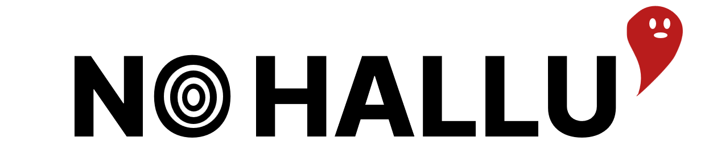

참고문헌 목록을 붙여넣으면, 실재하지 않는 문헌을 찾아냅니다.
✨
v3.0
— 2026년 3월 8일 업데이트
학생이 제출한 참고문헌 전체를 붙여넣으세요:
검증 시작
지우기
문헌을 검증하고 있습니다...
0/0 검사 중...
상세 검증 결과:
💡 사용 안내
참고문헌 전체를 위 입력창에 붙여넣고 "검증 시작" 버튼을 누르세요. 각 문헌에 대해 Google 및 Google Scholar 검색 링크가 제공됩니다.
입력된 내용은 서버에 저장되지 않습니다.
검증 결과에 표시되는 패턴은 AI 생성 가능성을 나타냅니다.
검증 결과는 참고자료이며, 최종 판단은 사용자의 몫입니다.